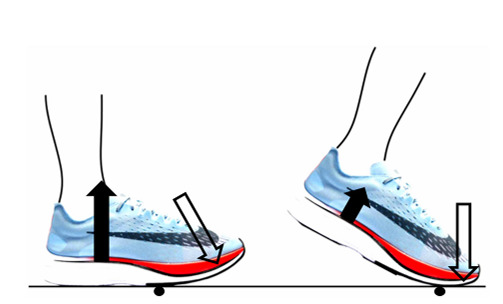

By Paavo Nyländen
19 Dec 2024
There are countless options available when choosing a running shoe, ranging from highly cushioned soles to minimalist designs that mimic barefoot running. The type of shoe often depends on the activity - sprinters and distance runners prefer different styles, with track athletes using spikes and marathon runners opting for more flexible footwear. This text explores the biomechanics behind these shoe designs and their impact on overall running performance.
Modern sprinting spikes and long-distance running shoes now share a key performance-enhancing feature: a curved, stiff forefoot plate. Typically made of carbon fiber, this plate leverages the ground reaction force (GRF) to create a "teeter-totter" effect upon impact. As the GRF pushes against one end of the plate, it rolls forward, propelling the heel upward and accelerating foot motion. The following image from Nigg et al. (2022) illustrates this mechanism.
In long-distance running, the primary advantage of this design is improved running economy—a measure of oxygen consumption (or energy demand) at a given speed. Simply put, when two athletes run at the same oxygen consumption level, the one with better running economy will be faster. In the latest "super shoes," this efficiency boost is largely attributed to the teeter-totter effect, although there is no rigorous evidence to prove it. However, the stiff plate is just one of many technological advancements in modern running footwear.
The foam in the sole of long-distance running shoes not only enhances comfort but also aids in energy return during ground contact. As the foot strikes the ground, the foam compresses, absorbing some of the impact's kinetic energy. When it rebounds, the stored energy is returned to the foot, effectively acting like a spring. Additionally, a higher stack height in the heel and midsole helps extend the runner's leg length and stride without significantly increasing weight or the leg’s moment of inertia, thanks to the use of ultra-light materials. A greater stack height also allows for a more pronounced curvature of the stiff plate within the shoe, further enhancing the teeter-totter effect.
In contrast, sprinting spikes lack the thick foam cushioning of long-distance shoes to keep weight at a minimum. Since sprinters primarily land on their forefoot, directly beneath their center of mass, heel and midsole cushioning would offer little benefit. This forefoot strike pattern also maximizes traction from the spikes while simultaneously leveraging the teeter-totter effect. The greater the force a sprinter applies to the ground, the higher the friction coefficient must be to generate the necessary forward acceleration.
Modern running shoe technology undeniably enhances performance. Recreational runners may see up to a 13 % improvement in running economy when switching from their regular shoes to advanced "super shoes," while elite athletes can gain around 2 % improvement. However, the benefits of this technology go beyond performance—cushioning, for instance, is considered to have a role in injury prevention. This brings us to an intriguing alternative: barefoot running and minimalist footwear. Is this more "natural" approach actually healthier, and does it reduce the risk of running injuries?
The foam soles of cushioned running shoes help absorb kinetic energy, reducing the forces transmitted to passive structures like the tibia and calcaneus. This effect is similar to landing from a drop jump, where muscle-tendon complexes stretch to absorb impact forces. In contrast, barefoot running tends to promote a forefoot strike, which increases the ankle joint moment. This is an important consideration for those transitioning directly from cushioned shoes to barefoot running.
A Cochrane review by X et al. (2022) found no significant difference in injury risk between cushioned shoes and barefoot/minimalist footwear. Similarly, no clear advantage was observed between softer and stiffer cushioning. This finding underscores the challenge of studying injury risk due to various confounding factors. Much of the available data on injury susceptibility is derived from modeling and mechanistic approaches, which should be considered when interpreting results.
In conclusion, modern running shoe technology has significantly evolved, offering a range of options that enhance performance and potentially influence injury risk. While innovations like the stiff forefoot plate and energy-returning foam have improved running economy, the debate over cushioning and its role in injury prevention remains unresolved. The contrast between cushioned footwear and minimalist or barefoot running highlights the complexity of biomechanics and individual adaptation.
Hébert-Losier, K., & Pamment, M. (2023). Advancements in running shoe technology and their effects on running economy and performance – a current concepts overview. Sports Biomechanics, 22(3), 335–350. doi: 10.1080/14763141.2022.2110512
Lin, S., Song, Y., Cen, X., Bálint, K., Fekete, G., & Sun, D. (2022). The Implications of Sports Biomechanics Studies on the Research and Development of Running Shoes: A Systematic Review. Bioengineering, 9(10), 497. doi: 10.3390/bioengineering9100497
Nigg, B. M., Subramanium, A., & Matijevich, E. S. (2022). Towards a biomechanical understanding of performance improvement with advanced running shoes. Footwear Science, 14(3), 133–137. doi: 10.1080/19424280.2022.2127543
Relph, N., Greaves, H., Armstrong, R., Prior, T. D., Spencer, S., Griffiths, I. B., … Langley, B. (2022). Running shoes for preventing lower limb running injuries in adults. Cochrane Database of Systematic Reviews, 2022(8). doi: 10.1002/14651858.CD013368.pub2
Ruiz-Alias, S. A., Molina-Molina, A., Soto-Hermoso, V. M., & García-Pinillos, F. (2023). A systematic review of the effect of running shoes on running economy, performance and biomechanics: Analysis by brand and model. Sports Biomechanics, 22(3), 388–409. doi: 10.1080/14763141.2022.2089589
Sun, X., Lam, W.-K., Zhang, X., Wang, J., & Fu, W. (2011). Systematic Review of the Role of Footwear Constructions in Running Biomechanics: Implications for Running-Related Injury and Performance.